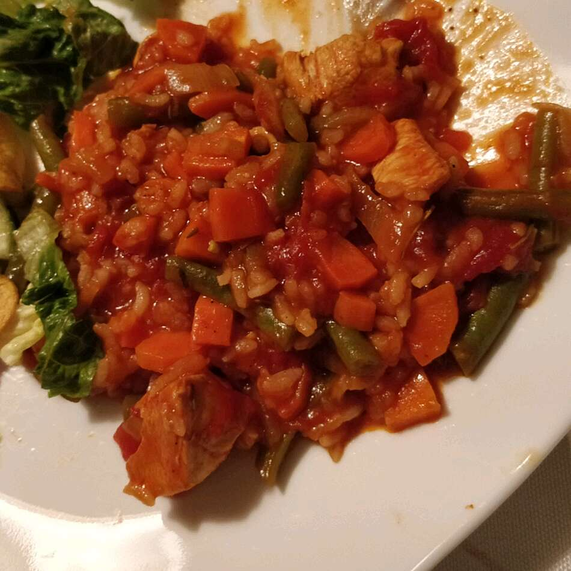

Jollof Rice recipe

Jollof rice
Jollof rice is a popular West African dish.
It is often made with a variety of spices and toppings
Ingredients
- 1 tablespoon olive oil
- 1 large onion, slicedd
- 2 cans stewed tomatoes
- 1/2 can tomato paste
- 1 teaspoon salt
- 1/4 teaspoon black pepper
- 1/4 teaspoon cayenne pepper
- 1/2 teaspoon red pepper flakes
- 1 tablespoon Worcestershire sauce
- 1 tablespoon chopped fresh rosemary
- 2 cups water
- 1 whole chicken, cut into 8 pieces
- 1 cup uncooked white rice
- 1 cup diced carrots
- 1/2 pound fresh green beans
- 1/4 teaspoon ground nutmeg
Steps
-
Pour oil into large saucepan. Cook onion in oil over medium-low heat
until translucent
-
Stir in stewed tomatoes and tomato paste, and season with salt, black
pepper, cayenne pepper, red pepper flakes, Worcestershire sauce and
rosemary. Cover, and bring to boil. Reduce heat, stir in water and add
chicken pieces. Simmer for 30 minutes.
-
Stir in rice, carrots and green beans, and season with nutmeg. Bring to
a boil, then reduce heat to low. Cover, and simmer until the chicken is
fork-tender and the rice is cooked, 25 to 30 minutes.
Back